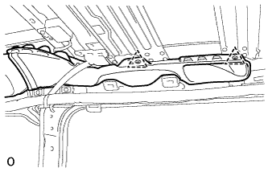
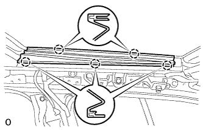
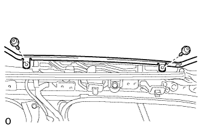
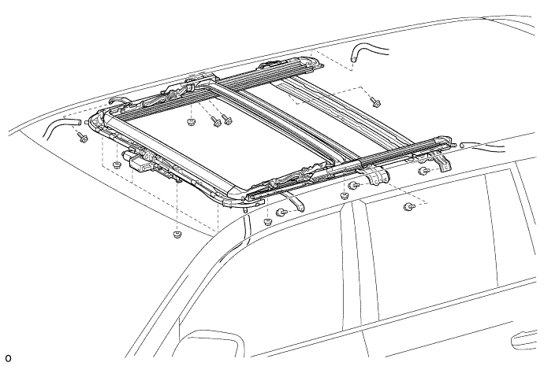

SLIDING ROOF HOUSING > REMOVAL |
| 1. DISCONNECT CABLE FROM NEGATIVE BATTERY TERMINAL |
| 2. REMOVE ROOF HEADLINING ASSEMBLY |
Remove the roof headlining (Click here).
| 3. REMOVE CURTAIN SHIELD AIRBAG ASSEMBLY LH |
Remove the curtain shield airbag (Click here).
| 4. REMOVE CURTAIN SHIELD AIRBAG ASSEMBLY RH |
| 5. REMOVE REAR NO. 5 ROOF AIR DUCT (w/ Rear Cooler) |
 |
Detach the 2 clips and remove the No. 5 roof air duct.
| 6. REMOVE REAR NO. 4 ROOF AIR DUCT (w/ Rear Cooler) |
| 7. REMOVE SLIDING ROOF SIDE GARNISH LH |
 |
Detach the 5 claws and remove the side garnish.
| 8. REMOVE SLIDING ROOF SIDE GARNISH RH |
| 9. REMOVE SLIDING ROOF GLASS SUB-ASSEMBLY |
 |
Using a T25 "TORX" driver, remove the 4 screws and glass.
| 10. REMOVE SLIDING ROOF WEATHERSTRIP |
Remove the sliding roof weatherstrip.
| 11. REMOVE SLIDING ROOF HOUSING SUB-ASSEMBLY |
Disconnect the 4 sliding roof drain hoses.
Remove the 8 bolts, 8 nuts and housing.
